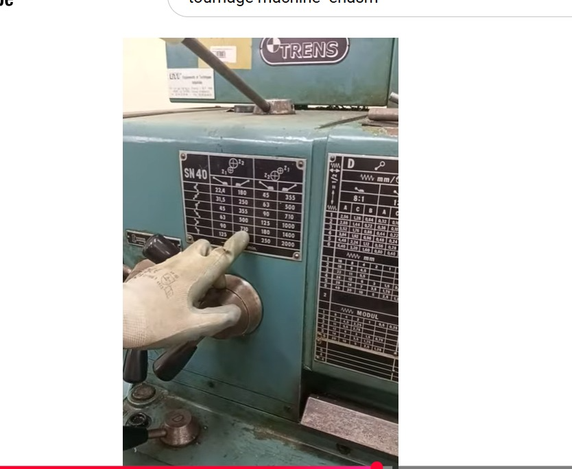

TRENS SN 40
Vitesses de broche (tr/min)
| Z₁ · Z₂ | Z₂ · Z₁ |
|---|
Les cases en vert indiquent le régime sélectionné. Le tiret correspond à la case masquée par le gant.
Tableau de filetage
La partie visible porte les repères D, 8:1, A C B, mm et MODUL. Le bord droit du tableau est hors champ.
Photo de la plaque
